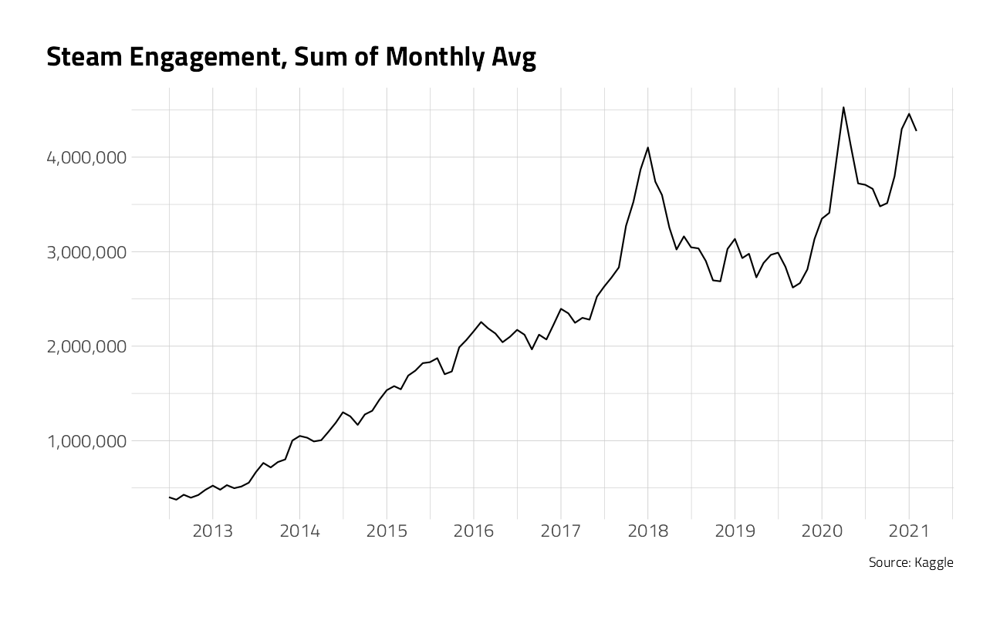
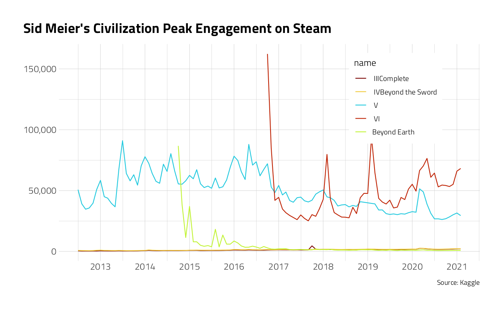
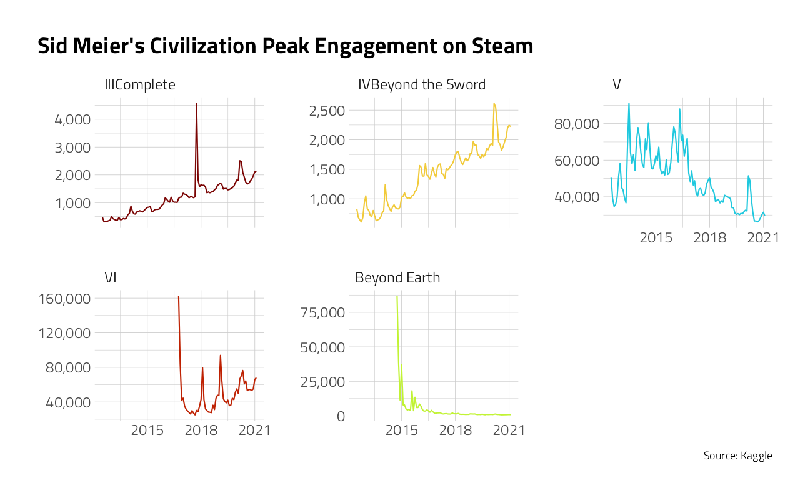
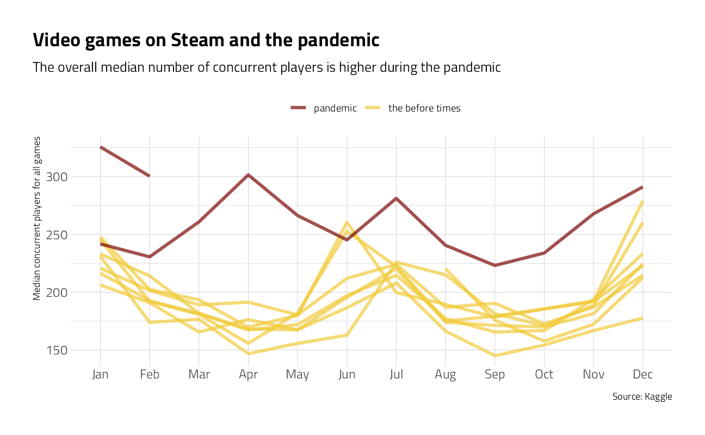

Last updated: 2021-09-29
Checks: 7 0
Knit directory: myTidyTuesday/
This reproducible R Markdown analysis was created with workflowr (version 1.6.2). The Checks tab describes the reproducibility checks that were applied when the results were created. The Past versions tab lists the development history.
Great! Since the R Markdown file has been committed to the Git repository, you know the exact version of the code that produced these results.
Great job! The global environment was empty. Objects defined in the global environment can affect the analysis in your R Markdown file in unknown ways. For reproduciblity it’s best to always run the code in an empty environment.
The command set.seed(20210907) was run prior to running the code in the R Markdown file. Setting a seed ensures that any results that rely on randomness, e.g. subsampling or permutations, are reproducible.
Great job! Recording the operating system, R version, and package versions is critical for reproducibility.
Nice! There were no cached chunks for this analysis, so you can be confident that you successfully produced the results during this run.
Great job! Using relative paths to the files within your workflowr project makes it easier to run your code on other machines.
Great! You are using Git for version control. Tracking code development and connecting the code version to the results is critical for reproducibility.
The results in this page were generated with repository version 835d1e6. See the Past versions tab to see a history of the changes made to the R Markdown and HTML files.
Note that you need to be careful to ensure that all relevant files for the analysis have been committed to Git prior to generating the results (you can use wflow_publish or wflow_git_commit). workflowr only checks the R Markdown file, but you know if there are other scripts or data files that it depends on. Below is the status of the Git repository when the results were generated:
Ignored files:
Ignored: .Rhistory
Ignored: .Rproj.user/
Ignored: catboost_info/
Ignored: data/2021-09-08/
Ignored: data/CNHI_Excel_Chart.xlsx
Ignored: data/CommunityTreemap.jpeg
Ignored: data/Community_Roles.jpeg
Ignored: data/YammerDigitalDataScienceMembership.xlsx
Ignored: data/acs_poverty.rds
Ignored: data/fmhpi.rds
Ignored: data/grainstocks.rds
Ignored: data/hike_data.rds
Ignored: data/us_states.rds
Ignored: data/us_states_hexgrid.geojson
Ignored: data/weatherstats_toronto_daily.csv
Untracked files:
Untracked: code/YammerReach.R
Untracked: code/work list batch targets.R
Unstaged changes:
Modified: code/_common.R
Note that any generated files, e.g. HTML, png, CSS, etc., are not included in this status report because it is ok for generated content to have uncommitted changes.
These are the previous versions of the repository in which changes were made to the R Markdown (analysis/2021_03_15_tidy_tuesday.Rmd) and HTML (docs/2021_03_15_tidy_tuesday.html) files. If you’ve configured a remote Git repository (see ?wflow_git_remote), click on the hyperlinks in the table below to view the files as they were in that past version.
| File | Version | Author | Date | Message |
|---|---|---|---|---|
| Rmd | 835d1e6 | opus1993 | 2021-09-29 | adopt _common.R color palette |
The #TidyTuesday data this week comes from Steam by way of Kaggle and originally came from SteamCharts. The data was scraped and uploaded to Kaggle.
suppressPackageStartupMessages({
library(tidyverse)
library(tidymodels)
library(lubridate)
library(hrbrthemes)
library(systemfonts)
})
source(here::here("code","_common.R"),
verbose = FALSE,
local = knitr::knit_global())
ggplot2::theme_set(theme_jim(base_size = 12))tt <- tidytuesdayR::tt_load("2021-03-16")
Downloading file 1 of 1: `games.csv`ttgames <- tt$games %>%
mutate(date = ym(paste0(as.character(year), month))) %>%
complete(nesting(date, gamename),
fill = list(avg = 0, peak = 0)
)Let’s have a look at the games themselves
games %>%
filter(avg > 0) %>%
count(gamename, sort = TRUE) %>%
ggplot(aes(n)) +
geom_histogram(bins = 30) +
labs(
y = "Count of Months in dataset",
x = "Number of Titles"
)Discoveries:
There are some non-UTF characters in the game names.
There are 1248 distinct game names.
About 200 of the games appear in all 104 months of the study(??)
games %>%
group_by(date) %>%
summarise(engagement = sum(avg)) %>%
ggplot(aes(date, engagement)) +
geom_line() +
scale_y_continuous(labels = scales::comma) +
scale_x_date(
date_breaks = "year",
date_labels = "%Y"
) +
labs(
x = NULL, y = NULL, title = "Steam Engagement, Sum of Monthly Avg",
caption = paste0("Source: Kaggle")
)
The Sid Meier series:
games %>%
filter(str_detect(gamename, "Sid Meier")) %>%
mutate(
name = str_remove(gamename, "Sid Meier's Civilization"),
name = str_remove(name, "\\: ")
) %>%
ggplot(aes(date, peak, color = name)) +
geom_line() +
scale_y_continuous(labels = scales::comma) +
scale_x_date(
date_breaks = "year",
date_labels = "%Y"
) +
labs(
x = NULL,
y = NULL,
title = "Sid Meier's Civilization Peak Engagement on Steam",
caption = paste0("Source: Kaggle")
) +
theme(
legend.position = c(0.8, 0.75),
legend.background = element_rect(color = "white")
)
games %>%
filter(str_detect(gamename, "Sid Meier")) %>%
mutate(
name = str_remove(gamename, "Sid Meier's Civilization"),
name = str_remove(name, "\\: ")
) %>%
ggplot(aes(date, peak, color = name)) +
geom_line(show.legend = FALSE) +
scale_y_continuous(labels = scales::comma) +
scale_x_date(
date_breaks = "3 years",
date_labels = "%Y"
) +
facet_wrap(~name, scales = "free_y") +
labs(
x = NULL,
y = NULL,
title = "Sid Meier's Civilization Peak Engagement on Steam",
caption = paste0("Source: Kaggle")
)
I wonder if the all of the game engagement has a seasonal peak, like at a given month?
games %>%
mutate(
month = factor(month, levels = month.name),
month = fct_relabel(month, ~month.abb)
) %>%
group_by(year, month) %>%
summarise(
avg = median(avg),
.groups = "drop"
) %>%
filter(row_number() != first(row_number())) %>%
mutate(pandemic = case_when(
year %in% 2020:2021 ~ "pandemic",
TRUE ~ "the before times"
)) %>%
ggplot(aes(month, avg, group = year, color = pandemic)) +
geom_line(size = 1.4, alpha = 0.7) +
labs(
x = NULL,
color = NULL,
y = "Median concurrent players for all games",
title = "Video games on Steam and the pandemic",
subtitle = "The overall median number of concurrent players is higher during the pandemic",
caption = "Source: Kaggle"
) +
theme(legend.position = "top")
sessionInfo()R version 4.1.1 (2021-08-10)
Platform: x86_64-w64-mingw32/x64 (64-bit)
Running under: Windows 10 x64 (build 22000)
Matrix products: default
locale:
[1] LC_COLLATE=English_United States.1252
[2] LC_CTYPE=English_United States.1252
[3] LC_MONETARY=English_United States.1252
[4] LC_NUMERIC=C
[5] LC_TIME=English_United States.1252
attached base packages:
[1] stats graphics grDevices utils datasets methods base
other attached packages:
[1] systemfonts_1.0.2 hrbrthemes_0.8.0 lubridate_1.7.10 yardstick_0.0.8
[5] workflowsets_0.1.0 workflows_0.2.3 tune_0.1.6 rsample_0.1.0
[9] recipes_0.1.17 parsnip_0.1.7.900 modeldata_0.1.1 infer_1.0.0
[13] dials_0.0.10 scales_1.1.1 broom_0.7.9 tidymodels_0.1.3
[17] forcats_0.5.1 stringr_1.4.0 dplyr_1.0.7 purrr_0.3.4
[21] readr_2.0.2 tidyr_1.1.4 tibble_3.1.4 ggplot2_3.3.5
[25] tidyverse_1.3.1 workflowr_1.6.2
loaded via a namespace (and not attached):
[1] readxl_1.3.1 backports_1.2.1 selectr_0.4-2
[4] plyr_1.8.6 tidytuesdayR_1.0.1 splines_4.1.1
[7] listenv_0.8.0 usethis_2.0.1 digest_0.6.27
[10] foreach_1.5.1 htmltools_0.5.2 viridis_0.6.1
[13] fansi_0.5.0 magrittr_2.0.1 tzdb_0.1.2
[16] globals_0.14.0 modelr_0.1.8 gower_0.2.2
[19] extrafont_0.17 vroom_1.5.5 R.utils_2.11.0
[22] extrafontdb_1.0 hardhat_0.1.6 colorspace_2.0-2
[25] rvest_1.0.1 textshaping_0.3.5 haven_2.4.3
[28] xfun_0.26 crayon_1.4.1 jsonlite_1.7.2
[31] survival_3.2-11 iterators_1.0.13 glue_1.4.2
[34] gtable_0.3.0 ipred_0.9-12 R.cache_0.15.0
[37] Rttf2pt1_1.3.9 future.apply_1.8.1 DBI_1.1.1
[40] Rcpp_1.0.7 viridisLite_0.4.0 bit_4.0.4
[43] GPfit_1.0-8 lava_1.6.10 prodlim_2019.11.13
[46] httr_1.4.2 ellipsis_0.3.2 farver_2.1.0
[49] pkgconfig_2.0.3 R.methodsS3_1.8.1 nnet_7.3-16
[52] sass_0.4.0 dbplyr_2.1.1 utf8_1.2.2
[55] here_1.0.1 labeling_0.4.2 tidyselect_1.1.1
[58] rlang_0.4.11 DiceDesign_1.9 later_1.3.0
[61] munsell_0.5.0 cellranger_1.1.0 tools_4.1.1
[64] cachem_1.0.6 cli_3.0.1 generics_0.1.0
[67] evaluate_0.14 fastmap_1.1.0 yaml_2.2.1
[70] ragg_1.1.3 bit64_4.0.5 knitr_1.36
[73] fs_1.5.0 future_1.22.1 whisker_0.4
[76] R.oo_1.24.0 xml2_1.3.2 compiler_4.1.1
[79] rstudioapi_0.13 curl_4.3.2 reprex_2.0.1
[82] lhs_1.1.3 bslib_0.3.0 stringi_1.7.4
[85] highr_0.9 gdtools_0.2.3 lattice_0.20-44
[88] Matrix_1.3-4 styler_1.6.2 conflicted_1.0.4
[91] vctrs_0.3.8 pillar_1.6.3 lifecycle_1.0.1
[94] furrr_0.2.3 jquerylib_0.1.4 httpuv_1.6.3
[97] R6_2.5.1 promises_1.2.0.1 gridExtra_2.3
[100] parallelly_1.28.1 codetools_0.2-18 MASS_7.3-54
[103] assertthat_0.2.1 rprojroot_2.0.2 withr_2.4.2
[106] parallel_4.1.1 hms_1.1.1 grid_4.1.1
[109] rpart_4.1-15 timeDate_3043.102 class_7.3-19
[112] rmarkdown_2.11 git2r_0.28.0 pROC_1.18.0